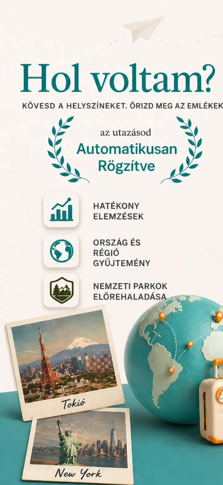
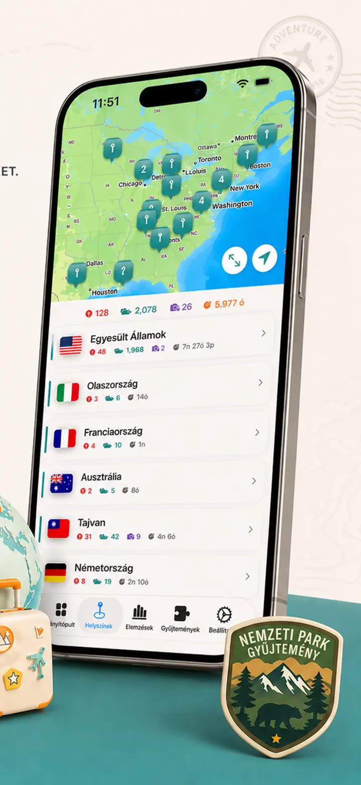
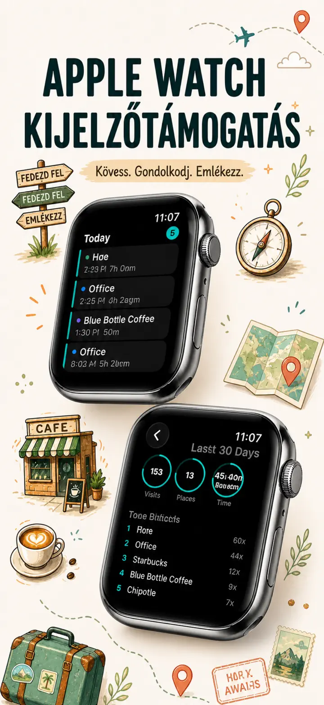
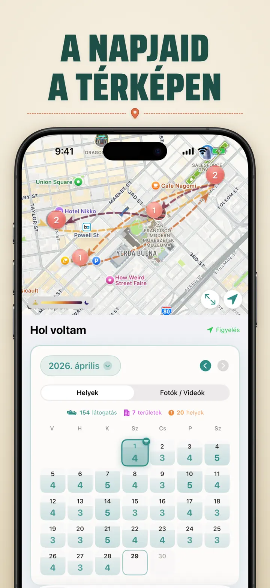
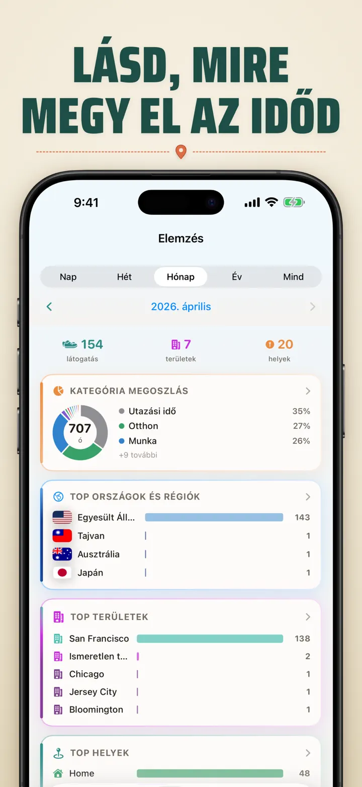
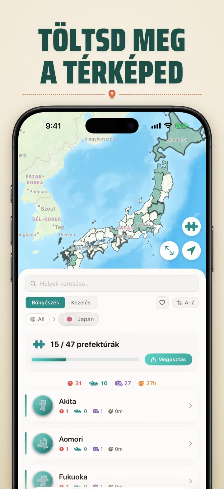
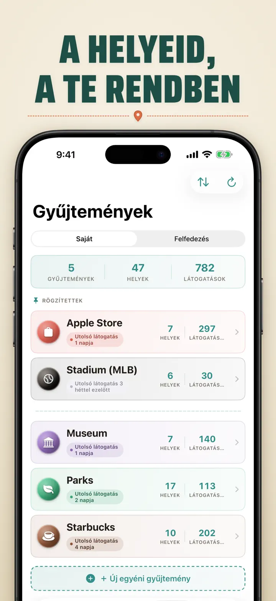
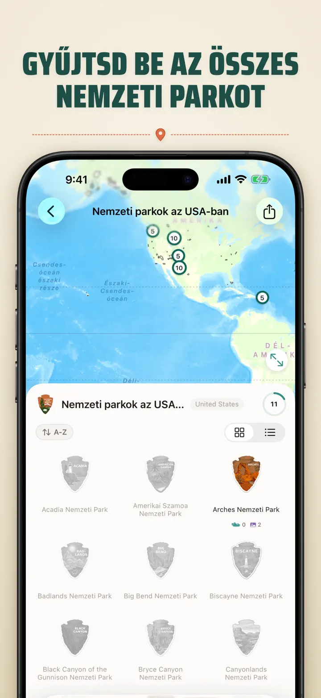
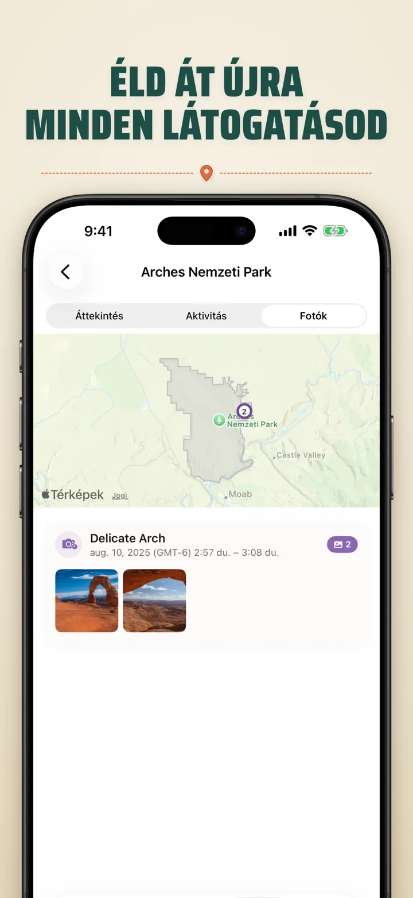

Hol voltam?
Helyek, fotók és haladás
Új: Japán 103 Ichinomiya szentélye, mindegyik saját faragott jelvénnyel. Automatikus látogatáskövetés és privát idővonal, az eszközödön.
Letöltés az App Store-ból
Az alkalmazásról
Where was I ? — Személyes helyszínmemóriád
Megpróbáltad már felidézni a múlt havi fantasztikus éttermet? A Where was I ? automatikusan rögzíti látogatásaid, és gyönyörű idővonalat épít életed utazásáról.
AUTOMATIKUS KÖVETÉS
Nincs szükség kézi naplózásra. Az alkalmazás csendben rögzíti érkezésed és távozásod, részletes látogatási előzményeket hozva létre minden erőfeszítés nélkül.
OKOS NAPTÁRNÉZET
Tekintsd meg látogatásaid nap, hét vagy hónap szerint. Az intuitív naptár egyetlen pillantással mutatja a látogatások számát és az egyedi helyszíneket. Koppints egy napra, hogy lásd, hol voltál.
KEZDŐ- ÉS ZÁROLÁSI KÉPERNYŐ WIDGETEK
Tekintsd meg legutóbbi látogatásaid a közepes méretű Kezdőképernyő widgettel. A Zárolási képernyő widgetek mutatják az aktuális helyzeted, élő tartózkodási időmérőt vagy a mai látogatások számát — mindegyik koppintható.
RENDEZETT HELYSZÍNEK
A helyszínek automatikusan régió és város szerint csoportosulnak. Adj hozzájuk egyéni kategóriákat, mint Otthon, Munka, Edzőterem vagy Kávézó. Hozz létre saját kategóriákat egyedi ikonokkal és színekkel.
HATÉKONY ELEMZÉS
Fedezd fel az életed mintázatait:
- Időeloszlás kategóriák szerint
- Legtöbbet látogatott helyeid
- Heti ritmuselemzés
- Látogatási gyakoriság trendjei
- Helyszínenkénti tartózkodási idő diagram — mennyi időt töltesz ott, nap, hét, hónap vagy év szerint
ORSZÁG-RÉGIÓ GYŰJTEMÉNY
Változtasd utazásaid kirakóssá! Nézd meg, hány államot vagy régiót látogattál. Oszd meg kirakósként.
NEMZETI PARK HALADÁS
Fedezd fel a természetet! Automatikusan naplózd a nemzeti parki látogatásaid, és kövesd a haladásod a mindennapi helyszíneid mellett.
100 HÍRES JAPÁN VÁR
Japánban utazol? Egy új beépített gyűjtemény követi az ország 100 híres várába tett látogatásaid. Gyűjtemények fül → Felfedezés → Japán.
EGYÉNI GYŰJTEMÉNYEK
Kövesd, amit akarsz — Apple Stores, múzeumok, könyvesboltok. Hozz létre gyűjteményt kulcsszavakkal, és automatikusan megtelik. Darabszám, előzmények, térkép.
HELYELŐZMÉNYEID IMPORTÁLÁSA
Másik appból érkezel? Hozd magaddal teljes előzményeidet — a formátum automatikusan felismerésre kerül, a nagy exportokat is kezeli, és importálás előtt előnézetet látsz:
- Google Timeline (Google Maps export vagy Google Takeout)
- Arc Timeline (az Arcból exportált havi .json fájlok)
- Moves (ProtoGeo / Facebook Moves biztonsági mentés)
TÖMEGES KEZELÉS
Kezeld összes helyszíned egy helyen. Keress, rendezz és szűrj. Válassz több helyszínt, hogy egyszerre kategorizáld vagy töröld. Tartsd helyszínkönyvtárad rendezetten.
ADATVÉDELEM MINDENEKELŐTT
Helyadataid az eszközödön maradnak. Nincs szükség fiókra. Semmilyen adat nem kerül szerverekre. Mozgásaid a te ügyeid.
TÖKÉLETES:
- Munkaidő és helyszínek
- Éttermek és üzletek
- Napi rutin elemzése
- Útinapló és nemzeti parkok
- Költségek és km-követés
- Időbeosztás megértése
FUNKCIÓK:
- Automatikus érkezés- és indulásészlelés
- Naptárnézet napi látogatási idővonallal
- Kezdő- és Zárolási képernyő widgetek deep-linkinggel
- Helyszín-csoportosítás régió és város szerint
- Egyéni kategóriák ikonokkal és színekkel
- Intelligens kategória-javaslatok az Apple Mapstől
- Részletes látogatási előzmények időtartammal
- Helyszínenkénti tartózkodási idő diagram (nap / hét / hónap / év)
- Elemzési irányítópult betekintésekkel
- Helyszínek keresése és szűrése
- Ország-régió gyűjtemény megosztható kirakósképpel
- Nemzeti park haladás követése
- Beépített 100 híres japán vár gyűjtemény
- Egyéni gyűjtemények kulcsszavas automatikus illesztéssel, kézi szerkesztéssel és statisztikákkal
- Tömeges helyszínkezelés
- Importálás Google Timeline-ból, Arc Timeline-ból és Movesból
- Exportálási lehetőségek
- Nincs szükség fiókra
- Adatvédelmi szemléletű tervezés
Kezdd el helyszínmemóriád felépítését még ma. Töltsd le a Where was I ?-t, és soha ne felejtsd el, hol jártál.
Adatvédelmi irányelvek: https://masawata.net/privacy-policy.html Szolgáltatási feltételek: https://www.apple.com/legal/internet-services/itunes/dev/stdeula/
Képernyőképek








Hol voltam?
Új: Japán 103 Ichinomiya szentélye, mindegyik saját faragott jelvénnyel. Automatikus látogatáskövetés és privát idővonal, az eszközödön.
Letöltés az App Store-ból